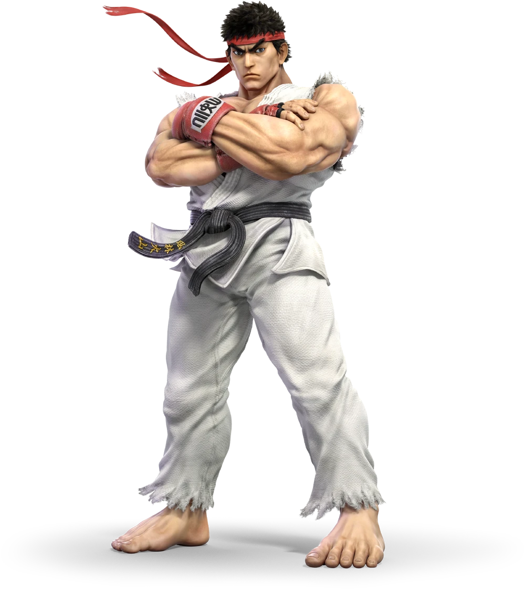
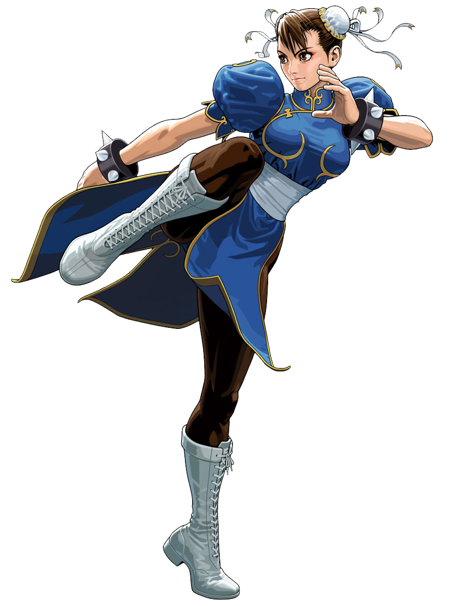
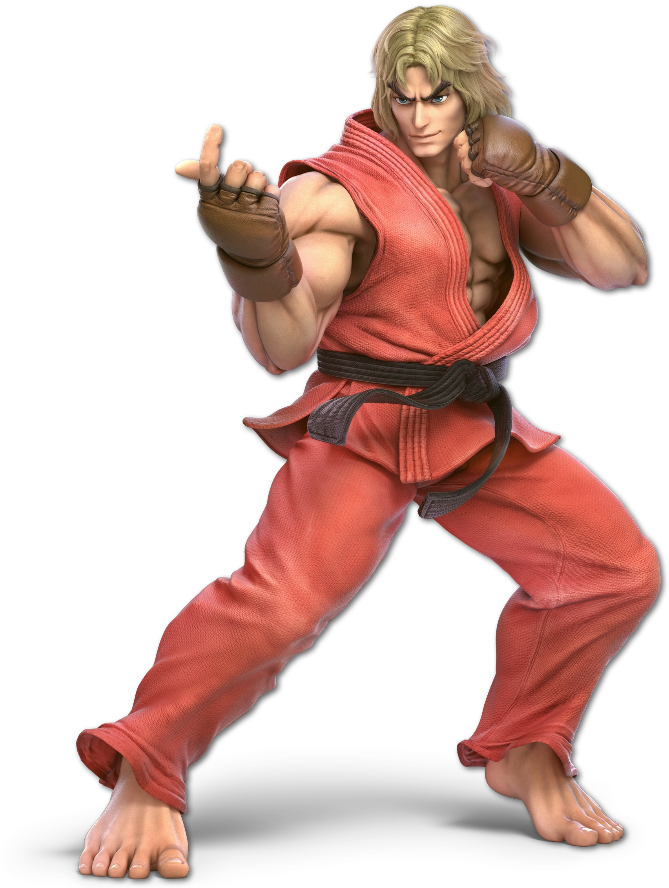

Personatges

RYU
És un personatge balancejat ideal per a principiants, amb moviments bàsics i efectius com el Hadouken (projectil), Shoryuken (atac antiaeri) i Tatsumaki Senpukyaku (puntada giratòria).

CHUN LI
És un personatge àgil amb un estil de combat basat en velocitat i combos ràpids. El seu atac icònic és el Spinning Bird Kick i els seus ràpids Lightning Kicks.

KEN MASTERS
Similar a RYU, Ken és un personatge versàtil, però amb un enfocament en atacs ràpids i ofensius. La seva versió del Shoryuken és més poderosa i moltes vegades té efectes de foc.